5. 各ウィンドウ
メインウィンドウ以外の各ダイアログの目的・操作・連携を示す。画像処理系のダイアログ（汎用フィルタ、2 値化、型変換、サイズ変換、幾何変換、数式）は処理内容を6 章で詳しく扱う。
共通の仕組み
生成と管理
| 区分 | 生成方法 |
|---|---|
| モードレス | CPimpomAPI::DialogOpen(IDD, show) が初回だけ new＋Create し、以後は表示／非表示を切り替える。ポインタは API.pDataDlg などのメンバに保持 |
| モーダル | 呼び出し元がローカル変数で生成し DoModal() |
データ・ヒストグラム・作業領域・マークの 4 ウィンドウは起動時に生成され、常に存在する前提で API.DrawImage() から呼ばれる。
ウィンドウ間の連携
- メッセージ通知は使わず、
API経由の直接呼び出しで連携する。画像が変わったらAPI.DrawImage()を呼ぶと、メイン・データ・ヒストグラム・マーク・複数画像表示・3D 画像一覧が更新される。 - メイン画面のマウス操作は、
CPIMPOMDlgが画像座標に変換してから、作業領域・マーク・フリーハンド編集の各ウィンドウとカスタムファンクションに配る。受け手は自分が非表示なら無視する。 - 多くのウィンドウは Enter／Esc で閉じない。データ・マーク・作業領域・フリーハンド・複数画像表示では矢印キーでマウスカーソルが 1px 動く。
- 「原画像 → 結果画像」型の画面（汎用フィルタ、2 値化、サイズ変換、幾何変換）は、初期値で原画像＝選択中の番号、結果＝その次の番号。「表示画像を原画像にする」で設定し直す。処理前に結果側を
BackupDataUnitで退避する（汎用フィルタの別メモリ出力を除く）。
データウィンドウ モードレス
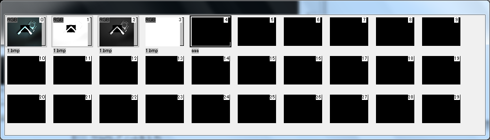
CDataDlg（IDD_DATA_DLG）。全画像メモリのサムネイル（既定 40×30）を一覧表示し、選択・コピー・削除・変換の入口になる。コントロールは無く、すべて自前描画。各サムネイルに番号（右上）、データ名（下）、型ラベル（左上、型ごとに色分け）を描き、選択中は黒枠で囲む。メインウィンドウの下に追従する。
| 操作 | 動作 |
|---|---|
| 左クリック | その画像メモリを選択 |
| 別のサムネイルへドラッグ | 画像メモリをコピー（CopyDataUnit）。コピー先が空でなければ、上書きする項目（画像データ、マスク、マーク、表示レンジ、作業領域、表示位置）を選ぶ |
| 右クリック | 選択してからメニュー: ビットマップ保存、名前変更、型変換、サイズ変換、削除、復元、3D 画像一覧表示 |
| ファイルをドロップ | ドロップ先の番号から順に読み込む（既存データは確認後バックアップ） |
| Delete | 確認後に削除（メニューと異なりバックアップしない） |
| Ctrl+C / Ctrl+V | 表示画像コピー／確認→バックアップ→貼り付け |
ヒストグラムウィンドウ モードレス
CHistgramDlg（IDD_HISTGRAM_DLG「濃度ヒストグラム」）。表示画像のヒストグラム（BrightLevel[256]）を 256×150 で表示し、表示濃度レンジ（コントラスト）を調整する。下にカラーバー（現在のパレット）を描く。RGB カラー表示時は輝度、作業領域使用時は領域内、マスク使用時は非マスク画素で集計する。
| コントロール | 動作 |
|---|---|
| 度数上限 | 縦軸の最大（初期 3000）。▲▼・×2・÷2 |
| min / max / mid / ±幅 | 表示レンジ。min・max を変えると mid・幅が連動し、逆も同様。Enter か「反映」で SetDispRange |
| プリセット | min-max（データの最小最大）、ave±sdv2（平均±2σ）、0-256、-π〜π |
| 平均・標準偏差 | 表示中のページ・チャネルの統計 |
| マウス移動 | ポイントした位置の濃度範囲と度数を表示 |
| 右ドラッグ | 範囲を反転表示し、確認後にその範囲を表示レンジにする |
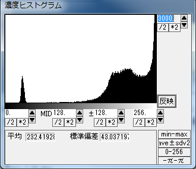
マークウィンドウ モードレス
CMarkDlg（IDD_MARK_DLG）。選択中画像のマーク一覧を表示・編集する。リストの列は ID、Type（P=点／L=線）、x、y、x2、y2、pt.val（点の画素値）、attrib0〜2。
| 操作 | 動作 |
|---|---|
| 点追加モードでクリック | AddMark（サブピクセル座標）し、最寄りのマークを選択 |
| 線追加モードでドラッグ | ラバーバンドを描き、離すと AddLineMark |
| リストをクリック | メイン画面で赤く強調し、座標固定時はその画素値を表示 |
| 見出しをクリック | 昇順／降順ソート |
| 右クリック／編集ボタン | 座標と属性を汎用入力ダイアログで編集 |
| 削除／全削除／番号表示 | 選択マークの削除、全削除、メイン画面へのマーク番号表示 |
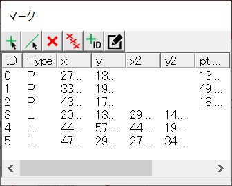
作業領域ウィンドウ モードレス
CWorkAreaDlg（IDD_WORKAREA_DLG）。作業領域の図形（最大 10）を編集する。図形の仕様は 3 章。
| コントロール／操作 | 動作 |
|---|---|
| 編集（チェック） | ON でメイン画面のドラッグにより図形を作成・編集。未初期化の図形は 2 点から生成、既存図形は端点から 10px 以内で変形、それ以外で全体移動 |
| 追加 | 種類（矩形・直線・楕円・円周など）を選んで図形を追加し、編集モードにする |
| 削除／全領域化 | 選択図形を削除（後続を詰める）／全図形を消して画像全体の矩形 1 つにする |
| 図形リスト・NOT 領域 | 選択すると座標と OR/NOT を表示し、メイン画面で太線にする。NOT にチェックで除外領域 |
| パラメータ 1〜6 | 図形の座標。スピンは即時反映、手入力は「反映」で反映 |
| 自動マスク生成 | ON で編集後に作業領域外を自動でマスク |
| マスククリア／クリッピング／拡大表示 | 全マスク解除／全図形の外接矩形で画像を切り抜き／選択図形の外接矩形に合わせて表示倍率を設定 |
OR 図形は緑、NOT 図形は赤で描き、メッセージ 1 に寸法を表示する。
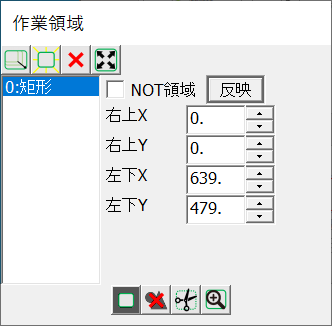
チャート（グラフ）ウィンドウ モードレス
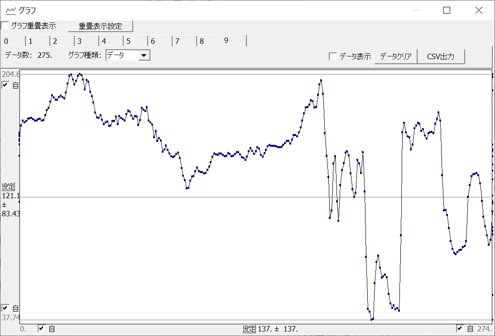
CChartDlg（IDD_CHART_DLG）。数値データ系列を 1D 折れ線または 2D 散布図で表示する。グラフは 10 本（タブ 0〜9）で、それぞれ最大 10000 点。2D は x, y を交互に格納し、異なる次元のデータを追加すると既存データはクリアされる。
| コントロール | 動作 |
|---|---|
| タブ | 表示するグラフ番号（0〜9） |
| グラフ種類 | データ／ヒストグラム（分割数 10〜499、初期 30）／スペクトラム（DFT。周波数 3 以上、周期で表示）。2D では無効 |
| 軸範囲 | X・Y の min／max と「自動」。「設定」で中央±幅を入力 |
| グラフ重畳表示 | 複数のグラフを色分けして重ねる。対象は「重畳表示設定」で選ぶ（初期は 0〜8） |
| データ表示 | ID / x / y のリスト。右クリックで値を編集 |
| データクリア／CSV 出力 | 表示中グラフの消去／CSV ファイルへの保存 |
| グラフ上クリック | 50px 以内の最寄り点を赤で強調し値を表示 |
データの供給元: API の AddDataToChart／PlotDataToChart 系、スクリプトマクロ、外部プログラム（共有メモリ）、メイン画面のルーラー＋濃度グラフ（グラフ 9 に線上の画素値を送る）。
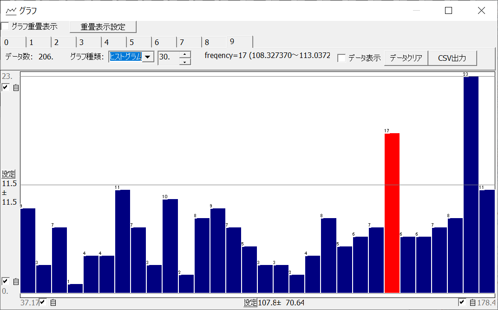
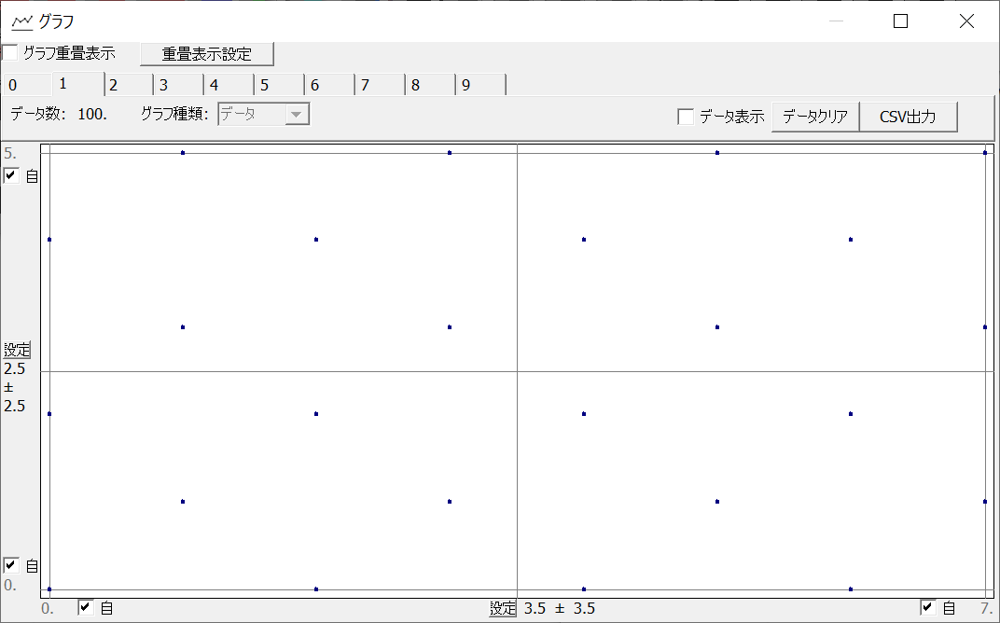
バッチ実行ウィンドウ モードレス
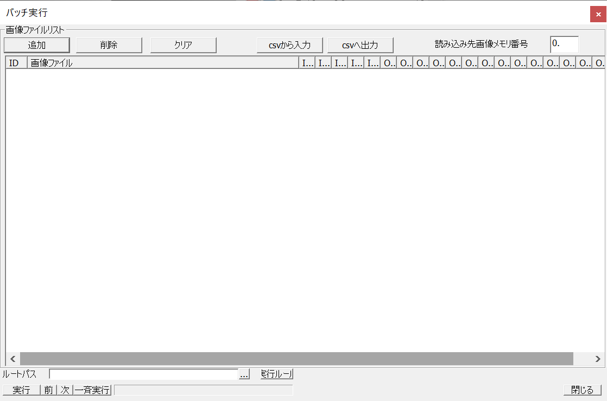
CBatchDlg。画像ファイルの一覧に対して、画像を読み込んではスクリプト・Python・カスタムファンクションを実行することを繰り返す。リストの列は ID、画像ファイル、入力パラメータ IN0〜4、出力パラメータ OUT0〜14。
| コントロール／操作 | 動作 |
|---|---|
| 追加／削除／クリア | ファイルダイアログで追加（複数可）、選択行削除、全消去 |
| CSV から入力／CSV へ出力 | 1 行 = パス,IN0..IN4,OUT0..OUT14 |
| ドラッグ＆ドロップ | 画像ファイルはパスとして、CSV は内容として追加。.txt は区切り文字（カンマ／スペース／コロン）を選んで読み込む |
| 読み込み先画像メモリ番号 | 画像を展開する番号 |
| ルートパス | 各パスの前に連結するフォルダ |
| 実行ルール | 0: スクリプト→カスタムファンクション、1: カスタムファンクション→スクリプト、2: スクリプトのみ（ini には保存しない） |
| 実行／前／次／一斉実行 | 選択行、前の行、次の行を実行／先頭から全行を順に実行（もう一度押すと中断） |
| ダブルクリック／右クリック／見出しクリック | その行を実行／入力パラメータの編集／ソート |
一斉実行はワーカースレッド（BatchThread）が 10 ms 間隔で 1 件ずつ API.BatchExecute を呼ぶ。各件の出力の state が 3（STOP）なら終了、2（RETRY）なら同じ行を再実行、それ以外は次の行へ進む。処理順の詳細は 8 章。
フリーハンド編集ウィンドウ モードレス
CDataPickDlg（IDD_DATAPICK_DLG）。画像データやマスクをペイントブラシのように直接編集する。操作が有効なのはこのウィンドウの表示中のみ。
| モード／コントロール | 動作 |
|---|---|
| ピック | クリック位置の値（RGB は 3 成分）とマスク状態を取得 |
| ペイント | クリック・ドラッグ位置にドットサイズ（1〜100）の円で値を書く（DrawPointOnImage／DrawPointOnMask）。押下時にバックアップ |
| 塗りつぶし | クリック位置を含む同値領域を塗る（FloodFillOnImage／FloodFillOnMask） |
| マスクを編集 | ON で画像データの代わりにマスク（ON/OFF）を編集 |
| データ | 書き込む値（RGB は左から R・G・B） |
| 作業領域内塗りつぶし | 作業領域内部を同一値で塗る |
| 元に戻す | RecoverDataUnit |
ペイント・塗りつぶし時はカーソル形状が変わる。作業領域使用時は領域内だけが対象。
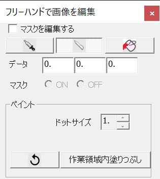
TCP/IP 通信ウィンドウ モードレス
CSocketCtrlDlg。TCP/IP の接続を確立し、テキストの送受信を確認する。通信内容の処理はカスタムファンクションで実装する想定で、ウィンドウを閉じても接続は続く。
| コントロール | 動作 |
|---|---|
| クライアント／サーバー | 種別（既定クライアント） |
| ホスト名／ポート番号 | 既定 localhost / 9876 |
| Open | サーバー: 待ち受け開始。クライアント: 接続。状態はメッセージ領域に表示（失敗時「接続失敗」） |
| 区切り文字 | CRLF（既定）／CR／LF |
| 送信 | 文字列を区切り文字付きで送る |
| 受信 | 受信した文字列を "->" 付きで順次表示 |
プロトコルの詳細は 8 章。
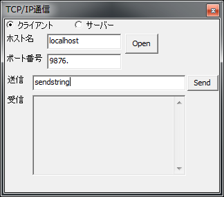
複数画像同時表示ウィンドウ モードレス
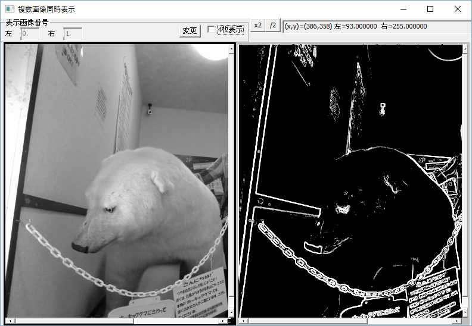
CMultiImageDispDlg。2／4／6 枚の画像を並べて比較する。初期状態では画面 i に画像メモリ i を表示する。
- 「表示画像変更」ON の間は、選択中の画面にメイン画面で選んだ画像メモリが割り当てられる。
- 左・中ドラッグでスクロール、ホイールで 10% 拡大縮小、×2・/2 で倍率変更。
- 同じサイズの画像同士は表示位置と倍率が同期する。これは各
CDataUnitの表示状態を直接書き換えるため、メイン画面の表示にも反映される。 - カーソル位置について全画面の
I(n)=値を 1 行で表示する。
3D 画像一覧ウィンドウ モードレス
C3DImgDispDlg。3D／FLOAT3D／RGB3D の全ページ（最大 384 枚）をタイル表示し、クリックしたページをメイン画面に表示する。表示中のページは太枠、平均 0 かつ標準偏差 0 のページは赤枠（オプション）。倍率（×2・/2）、ページ範囲スライダ、全ページの最小最大でレンジを揃える「min-max」、濃度 min/max を持つ。表示メニューまたはデータウィンドウの右クリックから開く。
3D 点群表示ダイアログ モーダル
CPointCloudDlg（IDD_POINT_CLOUD_DLG）。XYZ 型の画像を 3 次元点群として表示する。メイン画面の表示データ選択ボタン 4（XYZ 型のとき）で開く。
- X/Y/Z・輝度・マスクをコピーし、1000×740 の画面に、非マスクの点を Z バッファ付きの正投影で描く。右下に縮尺（mm）を表示。
- 左ドラッグの動作をボタンで切り替える: 回転／拡大縮小（上で拡大・下で縮小）／平行移動。中ドラッグで平行移動、ホイールで 10% 拡大縮小。
- ドラッグ中は 6 点おきに間引いて描く。
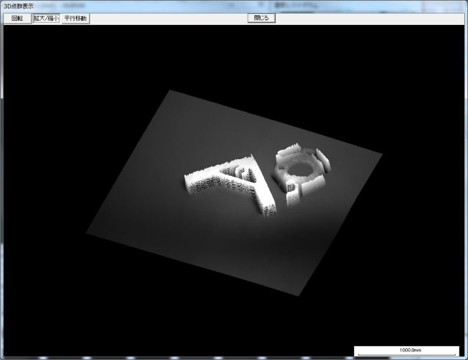
動画ファイル入出力ダイアログ モーダル
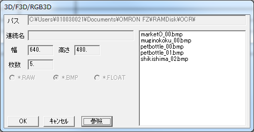
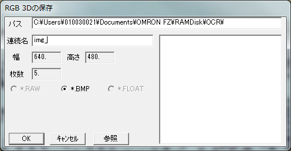
CIO3DDlg（IDD_IO_3D_DLG）。3D／FLOAT3D／RGB3D 型と複数の画像ファイルを相互に変換する。
| 方向 | 仕様 |
|---|---|
| 読込 | 「参照」（最大 1000 件）かドラッグ＆ドロップでファイル一覧を作る（名前順）。先頭ファイルから幅・高さ・チャネルを決め、全ファイルが同じ形式・サイズであること。読込型 8bit → 3D（カラーなら RGB3D）、float → FLOAT3D。8bit は cv::imread、float は LoadFloatImage で読む |
| 保存 | フォルダと連続名を指定し、連続名＋3 桁連番＋拡張子（例 img_000.bmp）で書く。3D → RAW／BMP、FLOAT3D → FLOAT、RGB3D → BMP |
ファイルメニューから開く。保存は 2 ページ以上のときのみ。
汎用データ入力ダイアログ モーダル
CConfirmDlg（IDD_MULTI_CONFIRM_DLG）。数値・文字列・ON/OFF・ラジオの入力欄を、登録した数（各最大 20）だけ並べて自動でレイアウトする汎用入力ダイアログ。PIMPOM_EXT で公開されており、カスタムファンクションから使える。
CConfirmDlg dlg;
dlg.SetTitle("パラメータ");
dlg.RegistVar("しきい値", &th); // int/short/float/double/CString/bool*
dlg.RegistVar("反転", &inverse); // bool はチェックボックス
if (dlg.DoModal() == IDOK) { /* 値が書き戻される */ }本体内でも、名前変更、マーク編集、作業領域の種類選択、チャートの設定などで使われる。
その他のウィンドウ
| ウィンドウ | 説明 | 参照 |
|---|---|---|
| 数式（画像生成）ウィンドウ | 数式で画像やマスクを生成 | 6 章 |
| 2 値化ウィンドウ | 2 値化とラベリング | 6 章 |
| 汎用フィルタウィンドウ | 25 種のフィルタ | 6 章 |
| 型変換／サイズ変換／幾何変換ダイアログ | データ型・サイズ・射影変換 | 6 章 |
| スクリプトウィンドウ | スクリプトの編集・実行 | 7 章 |
| Python スクリプトウィンドウ | Python プログラムの実行 | 8 章 |
| カスタムファンクション追加ダイアログ | CloneUserDlg.exe | 8 章 |